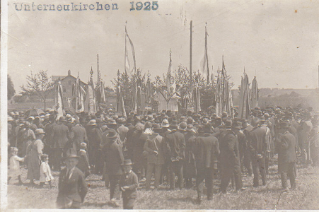
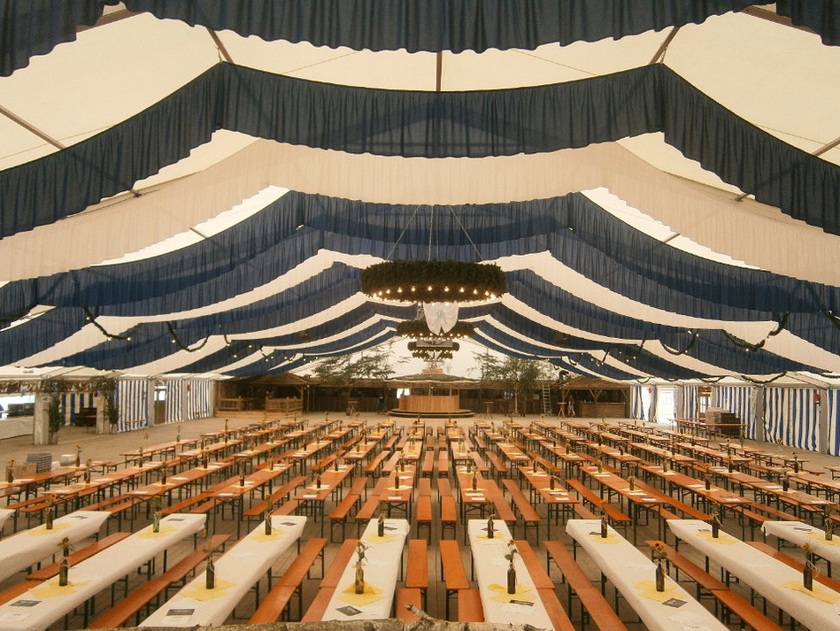
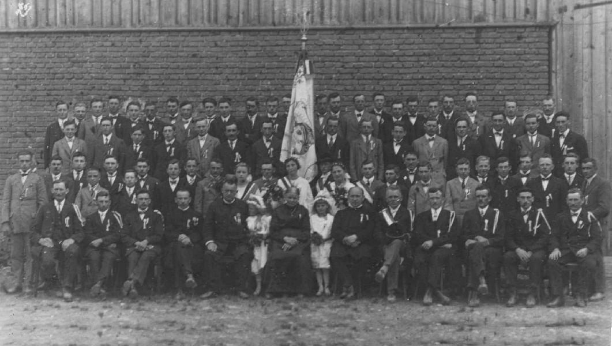
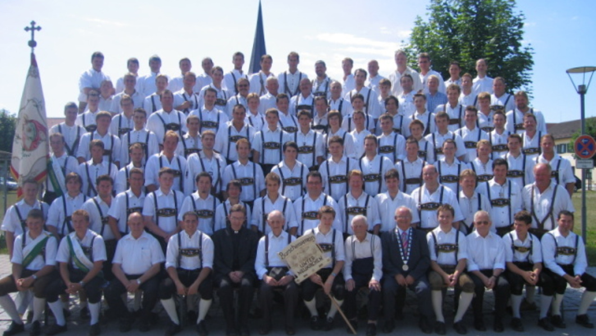

Links
BVU in Sozialen Netzwerken
2018 © | Zur Datenschutzerklärung | Website designed by Sebastian Gruber

Oft wurde in Unterneukirchen schon davon geredet einen Burschenverein zu gründen, da noch eine gut erhaltene Fahne des kath. Burschenvereins Unterneukirchen aus früheren Zeiten vorhanden ist. Ein paar junge Burschen (Erich Zwirglmaier, Seppe Jetzlsperger, Josef Langlechner (Hoal), Andreas Mayr und Christoph Kainzmaier) machten sich im September 2006 auf dem Weg nach Surheim, denn hier wurde im Jahr 2005 ein Burschenverein wiedergegründet, und das große Wiedergründungsfest wurde 2006 im September gefeiert. Bereits nach kurzer Zeit war uns allen klar "Unterneukirchen braucht an Burschenverein". In Surheim wurde bereits mit vielen anderen Burschenvereinen "geratscht" und wir informierten uns über die ganzen Tätigkeiten, die ein Burschenverein über das ganze Jahr hinweg so macht.
Im Frühjahr 2007 war dann ein erstes Zusammentreffen, bei dem dann noch Konrad Mitterreiter und Markus Perschl hinzukamen, die auch vollstens davon überzeugt waren, dass ein Burschenverein gegründet werden muss. Am 30.03.2007 war es dann soweit, es trafen sich im Gasthaus Raspl 14 junge Burschen und der Verein wurde im kleinen Kreis mit Pfarrer Hr. Schauer und Bürgermeister Hr. Heindl gegründet. Der kath. Burschenverein hat sich zum Ziel gesetzt, die Förderung und den Erhalt der Geselligkeit und der Tradition in Unterneukirchen, sowie den Kontakt zwischen den Burschen zu pflegen. Auf der Grundlage von Kameradschaft und Zusammenhalt sollen durch den Verein alte Heimatbräuche aufgegriffen und gefördert, und dadurch der Zusammenhalt der Jugend in der Gemeinde gestärkt und dem Verfall des ländlichen Brauchtums und Lebens Einhalt geboten werden. |  |
Ein paar Tage später wurde dann ein Infoabend sowie 1. Mitgliedsversammlung abgehalten, wo sich jeder Interessent über den Burschenverein Informieren konnte. Jedes Mitglied das bis zur 1. Mitgliedsversammlung beigetreten ist, zählt zu den Gründungsmitgliedern. Der neugegründete Verein konnte sogar die historische Marke aus dem Jahr 1914 übertrumpfen, denn bei der 1. Gründung des kath. Burschenvereins 1914 trugen 53 Mitglieder bei. Aktuell hat der Verein bereits über 400 Mitglieder.
Der Verein beteiligt sich bei kirchlichen so wie weltlichen Festen. Ein erster Höhepunkt in der jungen Vereinsgeschichte war die "Burschenversteigerung" auf der Unterneukirchner Hof-Dult mit dem Auktionär Adi Hager.
Wenn Sie unsere Ziele unterstützen möchten, würden wir uns über Ihre Mitarbeit freuen. Selbstverständlich freuen wir uns auch über eine kleine Spende, noch mehr würden wir es für gut heißen, wenn sie uns aktiv als Mitglied unterstützen!
Anfang August konnte der Burschenverein nun sein 100-jähriges Gründungsfest feiern. Nach mehr als 2 Jahren Vorbereitungszeit hatte der Festausschuss ein 8-tägiges Festprogramm auf die Beine gestellt, um das Jubiläum des Burschenvereins gebührend zu feiern.
|  |
Eröffnet wurden die Festtage durch das 3. Wein- und Weißbierfest in Verbindung mit einem Vereins- und Betriebsabend. Zuvor wurde aber noch ein Totengedenken am Kriegerdenkmal mit den Ortsvereinen abgehalten. Im Anschluss zogen die Vereine mit ihren Fahnenabordnungen zum Festzelt hinaus. Die Tage darauf folgten dann die 8. Unterneukirchner Burschenparty, ein Rasenmäherbulldogrennen zusammen mit den RMBF Maderlehen, ein Kabarett mit Sepp Hager und Freunden, ein Konzert mit "LaBrassBanda" und "Keller Steff und Band", unsere erste "I glab I stäh im Woid Party" und der Festabend mit einer Dirndl- und Burschenversteigerung. Den Höhepunkt erreichten die Feierlichkeiten am Festsonntag, an dem der Burschenverein zusammen mit über 3000 Burschen und Dirndl aus über 70 Vereinen sein 100-jähriges Gründungsfest in Verbindung mit dem 50. Gaufest der Burschen- und Arbeitervereine im Chiemgau und Rupertiwinkel feiern konnte. Ein großer Festgottesdienst am Dorfanger mit anschließendem Festumzug durch Unterneukirchen verliehen dem Jubiläum einen würdigen Rahmen. |
Dank der großartigen Unterstützung durch die Gemeinde, durch Firmen und Privatpersonen, durch den unermüdlichen Einsatz des Festausschusses, aber vor allem durch das überwältigende Engagement der zahlreichen Vereinsmitglieder wurde das 100-jährige Gründungsfest ein voller Erfolg. Dafür möchte sich der Burschenverein nochmals bei allen Beteiligten recht herzlich bedanken! Nur durch den großen Zusammenhalt im Ort war ein solches Fest möglich. Auch möchte sich der Burschenverein bei den Unterneukirchner Bürgern und speziell bei den Anwohnern für ihre Geduld und ihr Verständnis während der Festtage bedanken.
Weitere Informationen finden sich unter der direkten Homepage: www.gaufest2014.de
|  |  |
Burschenverein im Jahre 1925 |
Burschenverein im Jahre 2008 |
2018 © | Zur Datenschutzerklärung | Website designed by Sebastian Gruber